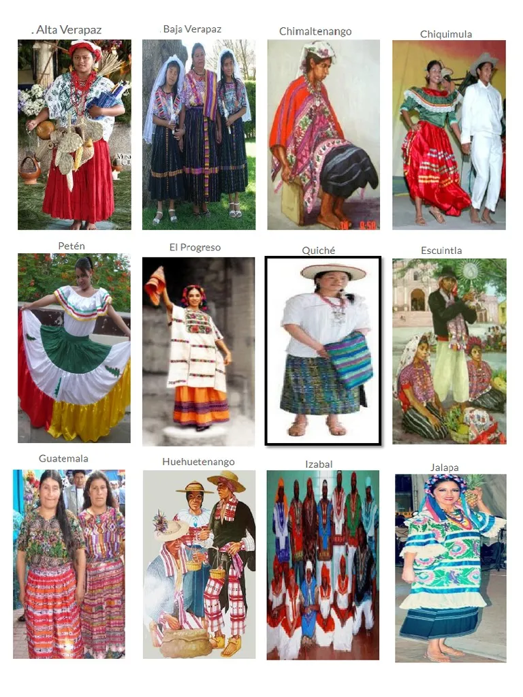
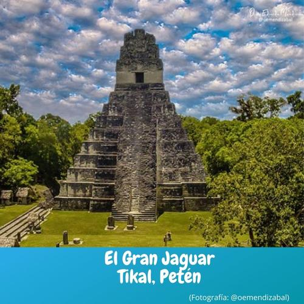
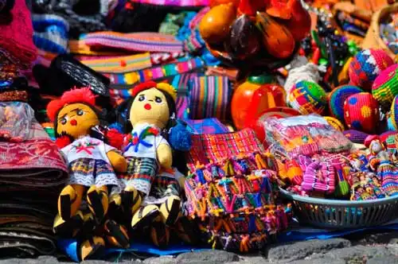
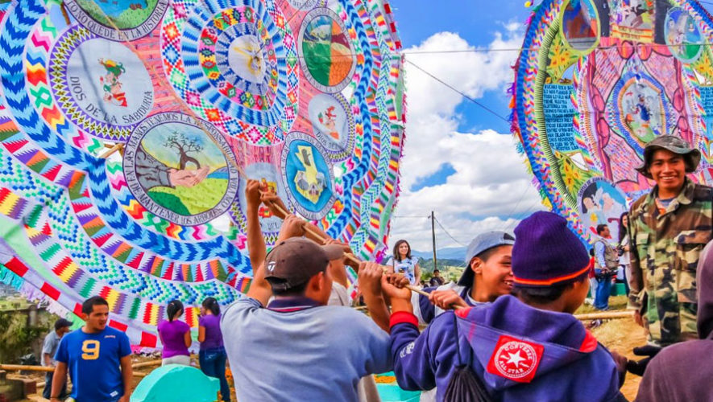
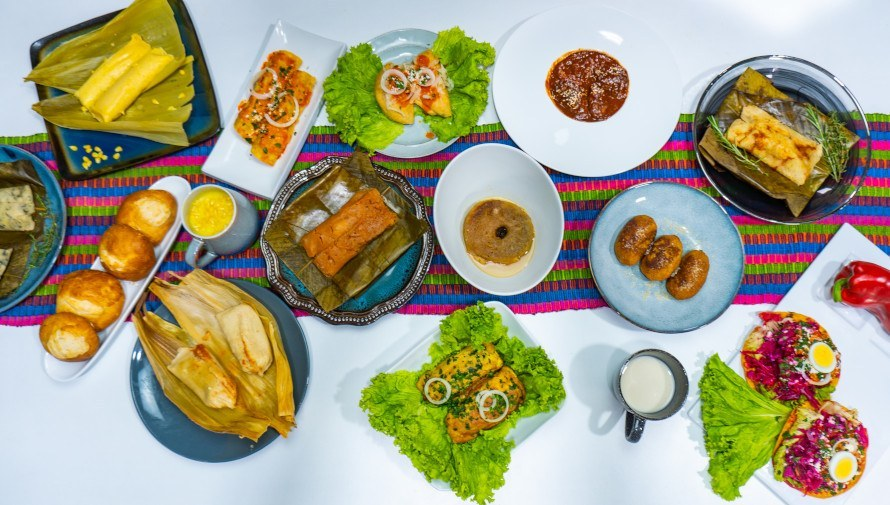
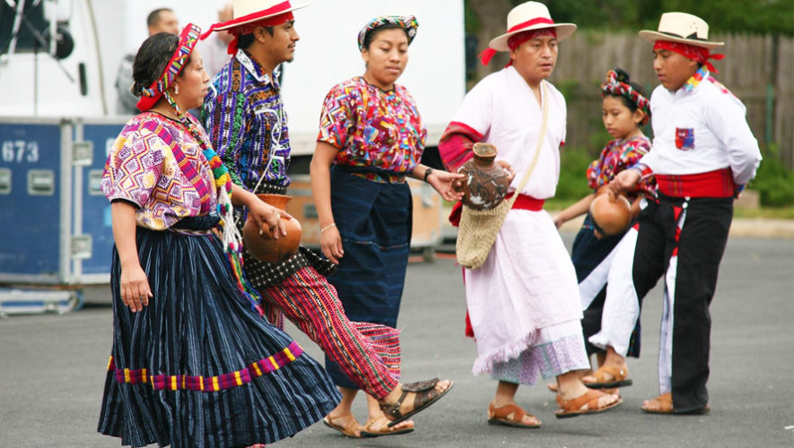

En Guatemala, por su tradición religiosa, se celebra en cada uno de sus municipios la Fiesta Titular o Fiesta Patronal. Esta toma lugar en la semana de veneración del Santo o Santa Patrona de cada municipio y auge en el día particular con asueto para ese día, realizándose celebraciones especiales. Para la Ciudad de Guatemala por ejemplo es el 15 de agosto en honor a la Virgen de la Asunción.
La Semana Santa en Guatemala es una festividad de un gran valor artístico, además del fervor religioso. Las procesiones de mayor tamaño se realizan en Antigua Guatemala y en la Ciudad de Guatemala. En estas, además de la belleza de las andas, los pobladores se organizan para hacer alfombras las cuales son el mayor atractivo de esta celebración debido a sus detalles artísticos que son característicos de Guatemala y a su vez, atraen a turistas quienes observan la detallada elaboración de estas. Las alfombras son hechas de aserrín, frutas, flores y distintos materiales, que son toda una expresión de fe y color. En Huehuetenango y en otras poblaciones del país llama la atención la representación de la Pasión de Cristo en vivo. En relación con el Patrimonio Cultural Inmaterial, hay varias manifestaciones protegidas, como la Huelga de Dolores de la Universidad de San Carlos de Guatemala (acuerdo ministerial 275-2010), el Convite del 8 de diciembre del municipio de Chichicastenango (acuerdo 347-2010) y la Cofradía de San Marcos Evangelista (acuerdo 532-2010).
La cultura de Guatemala es rica y diversa, influenciada por una combinación única de tradiciones indígenas, españolas y otras influencias culturales. Algunos aspectos clave de la cultura guatemalteca incluyen:
Herencia Maya: Guatemala tiene una fuerte presencia de la cultura Maya, que se refleja en su arte, arquitectura, idiomas y tradiciones. Lugares como Tikal son ejemplos impresionantes de la antigua civilización Maya.
Artesanía: La artesanía guatemalteca es colorida y variada, con tejidos tradicionales como los huipiles y cortes, así como cerámica, joyería y esculturas de madera.
Folklore y tradiciones: Guatemala tiene una rica tradición de cuentos populares, leyendas y mitos que reflejan las creencias y la historia del pueblo guatemalteco. Las celebraciones como el Día de los Muertos y las fiestas patronales son importantes en la cultura guatemalteca.
Gastronomía: La cocina guatemalteca es deliciosa y variada, con platos como el pepián, el kak'ik (un caldo de pavo), el tamal y el famoso café guatemalteco, que es reconocido internacionalmente por su calidad.
Música y baile: La música folclórica guatemalteca es vibrante y diversa, con géneros como el marimba, la música de marimba, la música ranchera y las marimbas orquestas. El baile también es una parte importante de la cultura guatemalteca, con danzas tradicionales como el baile de la conquista y el baile de los moros y cristianos.
